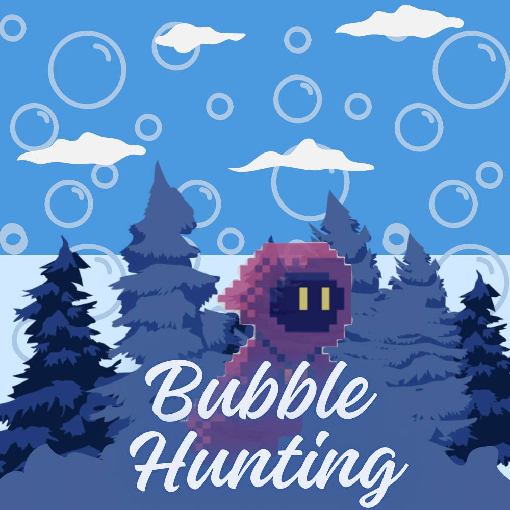

MISSION_01 ////
BUBBLE HUNTING
– GLOBAL GAME JAM 2025
Bubble Hunting is a 2D adventure game created during Global Game Jam 2025. The team developed the concept, visual assets, level atmosphere, and Unity project within the jam deadline before publishing it as an official submission.
◉ PROJECT SCOPE
- Created during a time-limited Global Game Jam event.
- Developed as a 2D adventure experience in Unity.
- Designed a forest environment, visual mood, and game identity.
- Prepared and published the official jam submission.
▣ TECHNOLOGIES & AREAS
⌁ KEY FEATURES
- 2D forest adventure setting.
- Custom game cover and visual identity.
- Atmospheric particles, mist, bushes, and layered scenery.
- Unity-based level composition.
- Official Global Game Jam project page.
◌ JAM CHALLENGE
Challenge: Completing a presentable project within a fixed deadline while dealing with an unexpected city-wide power outage.
Response: Adapted quickly, used a vehicle battery to recharge the laptop, continued development, and completed the submission on time.
◇ WHAT I LEARNED
⚠ SYSTEM EVENT // BLACKOUT
[WARNING] CITY POWER GRID: OFFLINE
[CHECK] DEVELOPMENT DEADLINE: ACTIVE
[ACTION] EXTERNAL VEHICLE POWER SOURCE CONNECTED
[SUCCESS] LAPTOP CHARGING RESTORED
[SUCCESS] MISSION CONTINUED
[SUCCESS] PROJECT SUBMITTED
GGJ_2025

STATUS: SUBMITTED // GLOBAL GAME JAM 2025